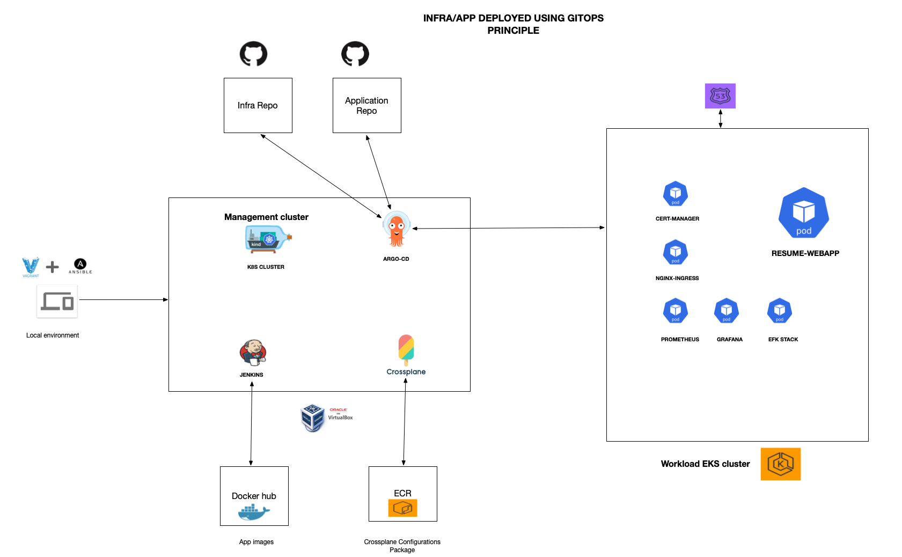
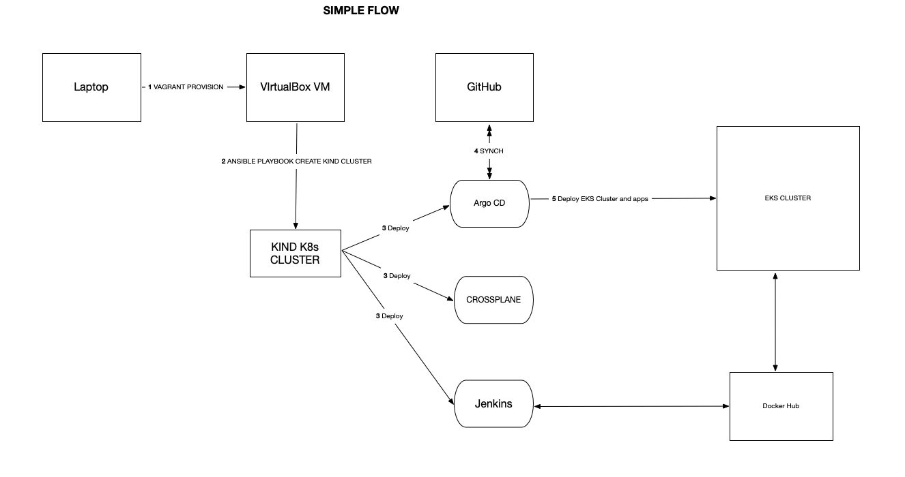
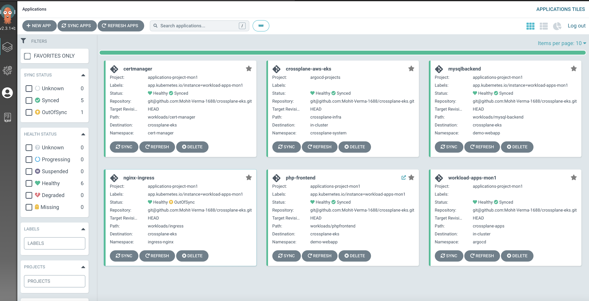

Application Architecture

Architecture explained
Below are the tools used and their explanation:
- Vagrant: Vagrant is an open-source software product for building and maintaining portable virtual software development environments; e.g., for VirtualBox, KVM, Hyper-V, Docker containers, VMware, and AWS. It tries to simplify the software configuration management of virtualization in order to increase development productivity. Vagrant is used to provision management VIrtual box Ubuntu VM where managements pods are running.
- Ansible: Ansible is an open-source software provisioning, configuration management, and application-deployment tool enabling infrastructure as code. It runs on many Unix-like systems, and can configure both Unix-like systems as well as Microsoft Windows.A simple Ansible playbook prepares the management enviornment by installing all necessary softwares needed. This playbook also preapres kind kubernetes cluster where our controller pods (ArgoCD,Crossplane etc.) are deployed.
- KIND: kind is a tool for running local Kubernetes clusters using Docker container “nodes”.
kind was primarily designed for testing Kubernetes itself, but may be used for local development or CI.For simplycity I am running KIND K8s cluster for deploying my controller apps.
- ARGO-CD: Argo CD is implemented as a kubernetes controller which continuously monitors running applications and compares the current, live state against the desired target state (as specified in the Git repo). A deployed application whose live state deviates from the target state is considered OutOfSync. EKS cluster and all the applications are deployed using ARGOCD as CD tool.
- CROSSPLANE: Crossplane extends your Kubernetes cluster, providing you with CRDs for any infrastructure or managed service. Compose these granular resources into higher level abstractions that can be versioned, managed, deployed and consumed using your favorite tools and existing processes you've already integrated with your clusters. I am using AWS provider for crossplane to create my EKS cluster. the declarative file is stored in GITHUB repo which in turn is used by ARGOCD to deploy the cluster.
- GITHUB: GitHub is a code hosting platform for version control and collaboration. It lets you and others work together on projects from anywhere. This tutorial teaches you GitHub essentials like repositories, branches, commits, and pull requests.
- JENKINS: Jenkins is an open source automation server. It helps automate the parts of software development related to building, testing, and deploying, facilitating continuous integration and continuous delivery. It is a server-based system that runs in servlet containers such as Apache Tomcat. Jenkins is used as CI tool to build and push images to the dockerhub.
DEPLOYMENT FLOW

ARGOCD SCREENSHOT
